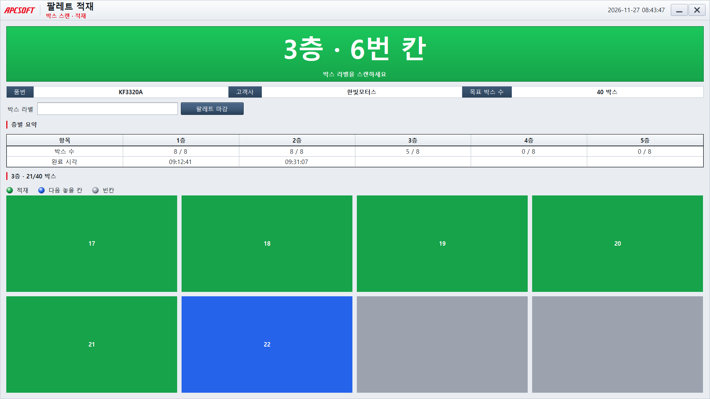
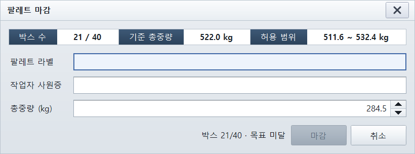
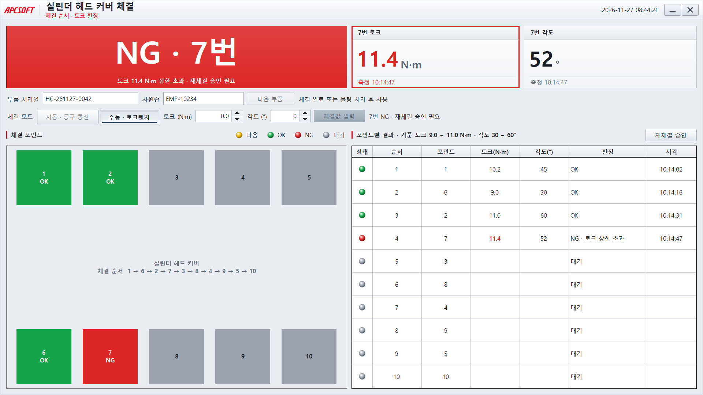
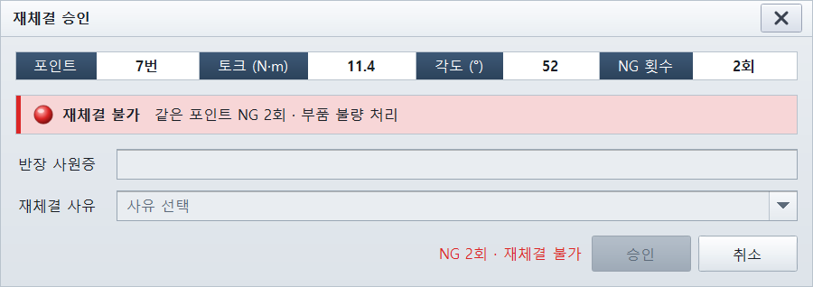
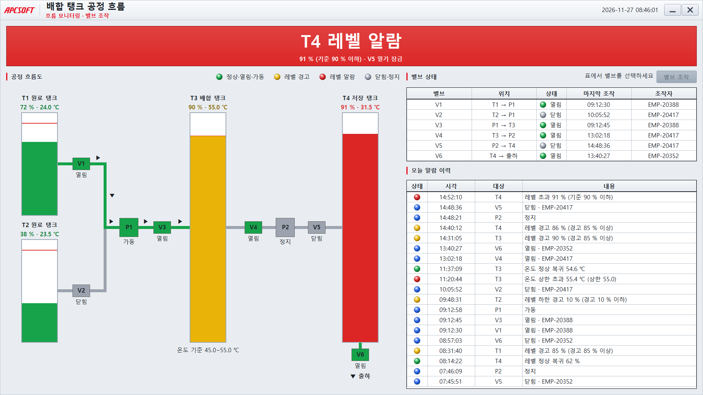
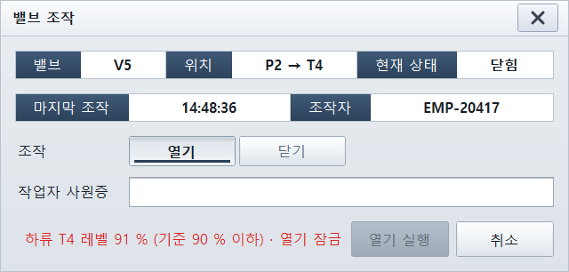

1126-N에서 나온 공통 결과 9가지가 다시 나오는지 보려고, 템플릿·전용 컨트롤에 없는 새 형태 세 가지로 다시 시연했습니다. 공통 프롬프트 앞부분은 1126-N과 같고, 스킬에는 시연 전에 "표준 Label 조립 허용" 규칙 하나만 넣었습니다. 세 시연 모두 빌드 경고·오류 0, render 점검 0건으로 끝났습니다. 9가지 중 4가지(겹침 점검, 고정 행 표, 스캔칸 둘, 숫자칸 미입력)가 다시 나왔고, 새로 두 번 나온 것이 2가지 있습니다.
두 번 이상 나온 것만 손볼 곳으로 올립니다. 괄호 안은 1126-N·1126-E에서 나온 시연입니다.
| # | 1126-N 공통 결과 | M1 | M2 | M3 | 판단 | 메모 |
|---|---|---|---|---|---|---|
| 1 | 새 형태의 허용 범위가 없어 규칙과 부딪힘 | 해소 | Label 조립 허용 뒤 셋 다 조립했고 위반인지 헷갈린다는 보고 없음. M3만 "겹치지 않는 조각까지 요구하나"를 물음 | |||
| 2 | 겹침 점검이 의도한 겹침을 못 허용 → 우회 | ● | 손볼 곳 | M3 탱크 레벨 채움·알람선·테두리를 겹치지 않는 조각 Label로 분해(N2와 같은 우회). M2는 윤곽선을 안 그려 겹침 자체를 피함 | ||
| 3 | 고정 행 수 표를 남은 높이에 맞출 방법 없음 | ● | ● | ● | 손볼 곳 | M1 5행 표를 가로로 눕힘, M2 Resize로 행 높이 직접 계산, M3 알람 이력 샘플을 14 → 19행으로 늘림. 셋이 다 다른 우회 (N1 · N3) |
| 4 | 스캔칸 둘일 때 값 분배 방법 없음 | ● | ● | 손볼 곳 | 둘 다 칸마다 형식 검사로 거부만 함. M1은 "맞는 칸으로 옮기는 안내 없음" 보고. 4회째 (N1 · N3 · 1126-E) | |
| 5 | Titled 제목 갱신 수단이 없다고 봄 | 해소 | M1이 Titled 반환 패널 Text로 제목 "3층 · 21/40 박스" 갱신 | |||
| 6 | ApcNumericBox 미입력 상태 없음 | ● | ● | 손볼 곳 | M1 Value <= 0을 미입력으로 봄. M2 수동 토크 0.0을 그대로 받아 판정 — 보고 없이 버그가 됨 (N3) | |
| 7 | 상태에 따라 입력 줄을 바꾸는 표준 방법 없음 | 안 나옴 | M2 자동/수동, M3 열기/닫기 모두 ApcTabStrip + Visible로 처리, 막힌다는 보고 없음 | |||
| 8 | 경계값 샘플 누락 | ● | 편차 | M1만 중량 경계 상태 샘플 없음. M2(9.0/30, 11.0/60)·M3(90 %, 55.0 ℃) 넣음 | ||
| 9 | new-project.sh 병렬 실행 시 dll 잠금 | 안 나옴 | 보고 없음 |
| 결과 | M1 | M2 | M3 | 메모 |
|---|---|---|---|---|
Titled tools 자리에 ApcStatusLegend(Dock=Right)를 넣으면 높이 0으로 접혀 점검에 걸림 | ● | ● | M1 안쪽 Dock=Top으로 옮김, M2 Height = S(34) 직접. M3는 잘 됐다고 함 — 차이 확인 필요 | |
| 진행 중 색 모호(색 표 Run/Info vs 단계표 규칙 Warn) | ● | ● | 1126-N N3에서도 나옴. M2는 판정판 Run, 도식 "다음" Warn으로 나눔 |
한 번만 나온 것(편차): 큰 번호 글꼴 수단 없음(M1), 판정판과 경고창에 같은 이유 중복(M1), ApcInfoStrip 폭 640에서 값 잘림(M2), 판정판 맨 위 규칙과 스캔 흐름 순서(M2), Titled 세로 쌓기 방법 없음(M3), 막는 이유 위치 미정(M3), 스캔칸 손입력 표시(M3).
ApcNumericBox 미입력 상태(6번) — M2에서 0.0이 그대로 판정되는 실제 버그로 이어짐.Titled tools 범례 접힘, 진행 중 색 기준.1126-N과 같은 10항목 × 2점입니다. ✓ 2점, △ 1점, ✗ 0점. 5번은 "템플릿에 없는 핵심 레이아웃 표현"입니다.
| # | 항목 | M1 | M2 | M3 |
|---|---|---|---|---|
| 1 | 3초 안에 알아야 할 것이 맨 위에 가장 크게 | ✓ | ✓ | ✓ |
| 2 | 주 동작이 스캔과 큰 버튼 | △ | △ | ✓ |
| 3 | 메인 화면이 막고 이유를 글로 보임 | ✓ | ✓ | ✓ |
| 4 | dialog 차단 규칙 | ✓ | ✓ | ✓ |
| 5 | 새 레이아웃 표현(적재 도식 / 체결 포인트 / 흐름도) | ✓ | ✓ | ✓ |
| 6 | 레이아웃 마무리(겹침·빈 곳·과대 요소) | △ | △ | △ |
| 7 | 빌드 0/0, render 점검 0건 | ✓ | ✓ | ✓ |
| 8 | 요청 항목 누락 없음 | ✓ | ✓ | ✓ |
| 9 | 경계값 샘플 | △ | ✓ | ✓ |
| 10 | 지침 피드백의 쓸모 | ✓ | ✓ | ✓ |
| 합계 | 17 | 18 | 19 |
| 시연 | 필요한 형태 | 만든 방법 | 남은 문제 |
|---|---|---|---|
| M1 | 팔레트 위에서 본 적재 도식 | Panel 안 Label 8개, Resize에서 4열 × 2행 위치 계산, ApcTheme.Status 색 + 범례 | 큰 칸에 작은 번호, 판정판 "6번 칸"과 칸 번호 "22"가 다른 번호 체계 |
| M2 | 부품 윤곽 위 체결 포인트 | Panel 안 Label 10개를 위아래 두 줄로 놓아 1-6-2-7… 지그재그, 번호 + OK/NG 글자 | 부품 윤곽선 없음, 도식 가운데가 크게 빔 |
| M3 | 탱크·배관·밸브 흐름도 | FlowDiagram(Panel + Label), 탱크 레벨을 조각 Label로 쌓고 배관은 가는 Label, 흐름은 ▶▼ 글자 | 겹침 점검 때문에 조각 분해. 결과물은 셋 중 가장 완성도 높음 |
apc-field-ui 스킬로 APCSOFT 현장 PC 프로그램 화면을 만든다. 먼저 Skill 도구로 apc-field-ui 스킬을 불러 그 지침을 끝까지 따른다(Skill 도구가 없을 때만 Read로 `C:\Users\rladb\.claude\skills\apc-field-ui\SKILL.md`를 읽는다). 앱 exe를 실행했으면 끝나기 전에 닫는다. - 작업 폴더: C:\00P_apc-field-ui\skill-test\demo-1127-m\M1-pallet\project (Git Bash: /c/00P_apc-field-ui/skill-test/demo-1127-m/M1-pallet/project) - render PNG: C:\00P_apc-field-ui\skill-test\demo-1127-m\M1-pallet\out\<형식이름>.png - 고객사 default. 사용자에게 질문할 수 없다 — 빠진 값은 아래 도메인 정보로 정하고 "정한 기준값"으로 보고한다. - 저장소의 다른 파일은 고치지 않는다. git 명령 금지. UI·UX 기준: 실제 현장에 설치할 화면이다. - 이 화면 사용자가 3초 안에 알아야 할 것이 가장 크게, 가장 위에 보이게 한다. - 작업자는 바코드 스캐너와 마우스를 쓴다. 주 동작은 스캔과 큰 버튼, 키보드 입력은 최소로. - 막아야 하는 동작(NG·인터락·조건 미충족)은 화면이 막고, 막은 이유를 글로 보여 준다. 끝나면 보고: 1) 만든 화면·dialog와 PNG 경로 2) 마지막 render 점검 건수, 빌드 경고·오류 수 3) UX 결정 3~5줄 4) 정한 기준값 5) 스킬 지침에서 막히거나 모호했던 점(특히 기존 템플릿·컨트롤로 표현하기 어려워 직접 만든 부분과 그 방법). 스킬이 확인 질문을 요구하면 그 형식대로 함께 보고한다.
## 화면 요청 포장 라인 팔레트 적재 프로그램. 프로젝트명 PalletPacker. 목적: 박스를 정해진 적재 패턴대로 팔레트에 쌓고, 다 쌓으면 팔레트를 마감한다. 사용자: 포장 작업자 — 포장 라인 끝 현장 PC. 메인 화면: 팔레트를 위에서 본 적재 도식(층마다 2×4 = 8칸, 5층. 현재 층 칸에 박스 순번 표시, 칸 색 = 빈칸/적재/다음 놓을 칸), 팔레트 제목에 진행 현황(예 "3층 · 21/40 박스"), 박스 라벨 스캔 칸, 층별 요약 표(1~5층: 박스 수·완료 시각), 현재 작업 지시(품번·고객사·목표 박스 수). dialog: 팔레트 마감(팔레트 라벨 스캔 + 작업자 사원증 스캔, 총중량 측정값 입력). 박스 수가 목표보다 적거나 총중량이 허용 범위를 벗어나면 마감을 막는다. ## 도메인 정보 - 박스 라벨 BX-<품번>-nnnnn. 작업 지시와 다른 품번, 이미 스캔한 박스는 거부. - 박스 1개 12.5 kg, 빈 팔레트 22.0 kg. 목표 40박스 기준 총중량 522.0 kg, 허용 ±2.0 %(511.6~532.4 kg, 경계 포함 OK). - 팔레트 라벨 PLT-yyMMdd-nnn, 사원증 EMP-nnnnn. - 표시 형식: 중량 0.0 kg, 시각 HH:mm:ss.


| 항목 | 점수 | 근거 |
|---|---|---|
| 1 3초 정보 | ✓ | 맨 위 판정판 "3층 · 6번 칸" + "박스 라벨을 스캔하세요" |
| 2 주 동작 | △ | 스캔 중심은 맞으나 박스 라벨 칸·[팔레트 마감]이 작고 표 위에 끼어 있음 |
| 3 메인 막기 | ✓ | 품번 불일치·중복·만재를 판정판 빨강 + 이유 + 경고창(코드 기준) |
| 4 dialog 차단 | ✓ | "박스 21/40 · 목표 미달" + [마감] 꺼짐 |
| 5 새 레이아웃(적재 도식) | ✓ | 2×4 칸 Label 조립, 적재/다음/빈칸 색 + 범례, 제목 "3층 · 21/40 박스" |
| 6 레이아웃 마무리 | △ | 판정판 "6번 칸"과 칸 번호 "22"가 서로 다른 번호 체계, 큰 칸에 작은 글자, dialog 총중량에 284.5가 미리 들어 있음 |
| 7 빌드·점검 | ✓ | 0/0, 0건 |
| 8 요청 항목 | ✓ | 도식·제목 진행·스캔·층별 요약·작업 지시·dialog 차단 전부 |
| 9 경계값 샘플 | △ | 511.6·532.4 경계 포함을 상수로 정했지만 경계값 상태 샘플·render 없음 |
| 10 지침 피드백 | ✓ | 고정 행 표, 스캔칸 둘, Titled 범례 접힘, 큰 글꼴 수단 없음, 단계 상태색 |
에이전트 보고 요약과 공통 결과 대조는 M1-pallet/REPORT.md.
## 화면 요청 실린더 헤드 커버 체결 순서 프로그램. 프로젝트명 TorqueSequence. 목적: 볼트 10개를 정해진 순서로 체결하고 포인트별 토크를 판정한다. 사용자: 조립 작업자 — 조립 라인 체결 공정 현장 PC. 메인 화면: 부품 윤곽 도식 위 체결 포인트 10개(번호 표시, 다음 체결할 포인트 강조, 끝난 포인트는 OK/NG 색), 현재 포인트의 토크값을 크게, 부품 시리얼 스캔 칸 + 작업자 사원증 스캔 칸(둘 다 스캔해야 시작), 포인트별 결과 표(번호·토크·각도·판정), 모드 전환: 자동(체결 공구 통신값) / 수동(토크렌치 측정값을 직접 입력 — 수동일 때만 입력 칸이 나온다). dialog: 재체결 승인(NG 포인트 정보 읽기 전용, 반장 사원증 스캔, 사유 선택). 같은 포인트 NG 2회째면 재체결을 막고 부품 불량 처리로 안내한다. ## 도메인 정보 - 토크 기준 9.0~11.0 N·m(경계 포함 OK), 각도 30~60°(경계 포함 OK). 둘 다 OK여야 포인트 OK. - 체결 순서 고정: 1-6-2-7-3-8-4-9-5-10(지그재그). 순서가 아닌 포인트 체결값이 오면 막는다. - 부품 시리얼 HC-yyMMdd-nnnn, 사원증 EMP-nnnnn, 반장 사원증은 EMP-9로 시작. - 표시 형식: 토크 0.0 N·m, 각도 정수 °, 시각 HH:mm:ss.


| 항목 | 점수 | 근거 |
|---|---|---|
| 1 3초 정보 | ✓ | 맨 위 빨강 "NG · 7번" + "토크 11.4 N·m 상한 초과 · 재체결 승인 필요", 옆 토크 카드 빨강 |
| 2 주 동작 | △ | 스캔 두 칸·[체결값 입력]·[재체결 승인]이 모두 작은 줄 버튼. 큰 버튼 없음 |
| 3 메인 막기 | ✓ | [체결값 입력] 꺼짐 + "7번 NG · 재체결 승인 필요", 순서 위반 Warn |
| 4 dialog 차단 | ✓ | "재체결 불가 · 같은 포인트 NG 2회 · 부품 불량 처리" NoticeBar + 입력·승인 꺼짐 |
| 5 새 레이아웃(체결 포인트) | ✓ | Label 10개 2줄 배치로 지그재그 순서, 번호 + OK/NG 글자, 범례, 순서 문구 |
| 6 레이아웃 마무리 | △ | 도식 가운데가 크게 비고 볼트가 위아래 끝에 붙음, 부품 모양이 안 읽힘 |
| 7 빌드·점검 | ✓ | 0/0, 0건 |
| 8 요청 항목 | ✓ | 도식·현재 토크·스캔 둘·결과 표·자동/수동·재체결 dialog 전부 |
| 9 경계값 샘플 | ✓ | 6번 9.0/30, 2번 11.0/60 → OK |
| 10 지침 피드백 | ✓ | Titled 범례 접힘, 진행 색 Run/Warn, 고정 행 표, InfoStrip 잘림, 판정판 위치와 흐름 순서 |
에이전트 보고 요약과 공통 결과 대조는 M2-torque/REPORT.md.
## 화면 요청 배합 탱크 공정 흐름 모니터링 프로그램. 프로젝트명 TankFlow. 목적: 원료 탱크 → 배합 탱크 → 저장 탱크 흐름과 밸브·펌프 상태를 한눈에 보고, 밸브를 조작한다. 사용자: 배합 공정 운전원 — 배합실 현장 PC. 메인 화면: 공정 흐름도(원료 탱크 T1·T2, 배합 탱크 T3, 저장 탱크 T4. 탱크마다 세로 레벨 표시, 탱크 사이 배관과 밸브 V1~V6 열림/닫힘, 펌프 P1·P2 가동 상태, 흐름 방향), 탱크 제목에 레벨 %와 온도, 밸브 상태 표(밸브·위치·상태·마지막 조작 시각·조작자, 6행), 오늘 알람 이력. dialog: 밸브 조작(선택한 밸브 정보 읽기 전용, 열기/닫기, 작업자 사원증 스캔으로 조작자 기록). 하류 탱크 레벨이 알람 기준 초과면 열기를 막고, 그 배관 펌프가 가동 중이면 흡입 쪽 밸브 닫기를 막는다. ## 도메인 정보 - 배관: T1 -V1- P1 -V3- T3, T2 -V2- P1, T3 -V4- P2 -V5- T4, T4 -V6- 출하. - 레벨: 경고 85 % 이상, 알람 90 % 초과(밸브 열기 인터락). 하한 경고 10 % 이하. - T3 배합 온도 45.0~55.0 ℃(경계 포함 OK). 나머지 탱크 온도는 표시만. - 사원증 EMP-nnnnn. - 표시 형식: 레벨 % 정수, 온도 0.0 ℃, 시각 HH:mm:ss.


| 항목 | 점수 | 근거 |
|---|---|---|
| 1 3초 정보 | ✓ | 맨 위 빨강 "T4 레벨 알람" + "91 % (기준 90 % 이하) · V5 열기 잠금" |
| 2 주 동작 | ✓ | 감시 화면. 조작은 흐름도 밸브 클릭 또는 표 선택 + 버튼, 선택 전 이유 글 |
| 3 메인 막기 | ✓ | 판정판에 "V5 열기 잠금", [밸브 조작] 선택 전 꺼짐 + 이유 |
| 4 dialog 차단 | ✓ | "하류 T4 레벨 91 % (기준 90 % 이하) · 열기 잠금" + [열기 실행] 꺼짐 |
| 5 새 레이아웃(흐름도) | ✓ | 탱크 4개 레벨 채움·알람선, 배관 굵은 선, 밸브·펌프 상태색 + 글자, 흐름 화살표 |
| 6 레이아웃 마무리 | △ | T3 제목 "90 % · 55.0 ℃"가 줄 전체 노랑 — 온도 55.0은 OK인데 경고색. 알람 이력은 샘플 행을 늘려 표를 채움 |
| 7 빌드·점검 | ✓ | 0/0, 0건 |
| 8 요청 항목 | ✓ | 흐름도·제목 레벨/온도·밸브 표 6행·알람 이력·dialog 두 인터락 전부 |
| 9 경계값 샘플 | ✓ | T3 90 % → 경고(알람 아님), 55.0 ℃ → OK, 이력에 85 %·10 % 경계 |
| 10 지침 피드백 | ✓ | 조립 허용과 겹침 점검의 관계, Titled 세로 쌓기, 막는 이유 위치, 스캔칸 손입력 |
에이전트 보고 요약과 공통 결과 대조는 M3-tank/REPORT.md.
재현된 문제의 원인을 고친 뒤 같은 화면 3종을 다시 돌렸습니다(skill-test/demo-1127-r). 점수는 R-M1 17 · R-M2 19 · R-M3 19입니다(1127-M은 17 · 18 · 19). 세 시연 모두 고친 기능을 썼고 1127-M의 우회는 모두 사라졌습니다.
| 문제 | 근본 원인 | 수정 | R-M1 | R-M2 | R-M3 |
|---|---|---|---|---|---|
| 스캔칸 둘 | 칸이 받는 코드를 말할 수단이 없어 포커스 칸이 남의 코드를 받음 | ApcScanBox.Accepts | ✓ | ✓ | ✓ |
| 숫자칸 미입력 | 빈 상태가 없어 늘 0.0 — 지침 "값 없으면 빈칸"과 어긋남 | Clear() / HasValue | ✓ | ✓ | — |
| 고정 행 표 | 정해진 행 수 표가 Fill 칸을 채울 수단이 없음 | ApcGrid.FillRows | △ | ✓ | ✓ |
| 겹침 점검 | 의도한 겹침(선·틀 안 채움)을 표현할 방법이 없음 | 얇은 Label 선 허용, 채움은 틀의 자식 | — | — | ✓ |
Titled 범례 접힘 | 설명이 "Dock = Right" 안내 → FlowLayoutPanel에서 높이 0 | tools의 Dock 무시, 설명 정정 | ✓ | ✓ | ✓ |
| 진행 중 색 | 지침 두 줄이 서로 다른 답 | 항목의 현재·다음 = Warn, 판정판 정상 진행 = Run | ✓ | ✓ | — |
R-M1의 △: FillRows를 5행 표에 써서 행 높이가 130 px로 과대해졌습니다. 남은 것: 주 동작(스캔 칸·주 버튼이 작은 한 줄)이 M1·M2에서 4회째 △, ApcInfoStrip 짧은 값 말줄임이 2회 나왔습니다. 다음 손볼 곳입니다.